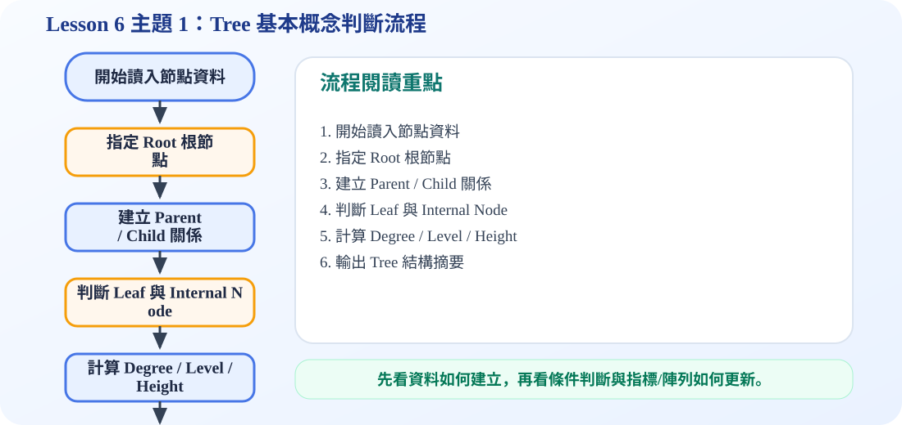

一、Tree 是什麼？
核心概念
Tree 可以翻成「樹」或「樹狀結構」。它不是一般線性的資料排列，而是一種有上下層關係的階層式結構。投影片用組織圖當例子：最上面是 President，下面分成不同 Vice-President，再往下分成 Manager。這種「一個上層節點往下分出多個下層節點」的形式，就是樹的基本樣子。
從定義來看，一棵樹是由有限個節點組成，而且一定有一個特別指定的節點叫做 root。root 以外的節點會被分成若干個互不重疊的集合，每一個集合本身也可以看成一棵樹，所以 tree 的定義具有遞迴性。
二、互動示意：Root、Parent、Child、Leaf、Subtree
請點選下方按鈕，觀察不同術語在樹上的位置。
Root 是最上方的節點，是整棵樹的起點。
三、重要術語完整說明
Node 節點：樹中的每一個資料單位都叫做 node。投影片中的 A、B、C、D、E、F 都是節點。
Root 根節點：位於最上方的節點，是整棵樹的起點。沒有 parent。
Degree 分支度：一個節點有幾棵子樹，它的 degree 就是多少。例如 A 有 B、C 兩個孩子，degree 就是 2；D 沒有孩子，degree 是 0。
Leaf 葉節點：degree 為 0 的節點，也就是沒有任何孩子的節點。
Height 高度：從 root 到 leaf 的最長路徑長度。投影片說明 height 會和最長路徑上的節點數有關。
Parent / Children：如果某節點下面接出其他節點，這個節點就是 parent；下面被接出的節點就是 children。
Siblings 兄弟節點：具有相同 parent 的節點。例如 B 和 C 若都由 A 連出，它們就是 siblings。
Ancestors 祖先節點：從 root 到某節點路徑上經過的所有上層節點。
Descendants 後代節點：某節點底下所有子樹中的節點，都可以視為它的 descendants。
四、動畫流程圖：如何判斷一棵 Tree？
五、Trees 的應用
投影片列出 Trees 的應用包含：computer systems directory structures、decision trees、game trees。這些例子共同點是「資料本身具有層級或分支選擇」。
Directory Structure 目錄結構
電腦資料夾常常是一層包一層，例如根目錄底下有多個資料夾，每個資料夾底下又有檔案或子資料夾。
Decision Tree 決策樹
從一個問題開始，依照不同答案往不同方向走，最後得到結果。很適合表示分類與判斷流程。
Game Tree 遊戲樹
每一步棋或每個選項都會產生新的可能狀態，因此可以用樹來表示所有可能發展。
資料結構課程中的 Tree
後面會延伸到 binary tree、binary search tree、heap、forest 等重要主題。
可編輯 C 程式範例：含中文註解與線上編輯器
這一段提供可直接修改的 C 程式碼。可以按「複製程式」貼到線上編輯器執行，也可以下載 .c 檔案。
程式題目教學內容：樹的基本概念示範
一、程式題目講解
本題用最小的 C 程式建立一個 root 與兩個 children，讓學生理解樹不是單純線性串列，而是由根節點往下分支的階層結構。重點觀念包含 root、children、leftChild 與 rightSibling 的連結方式。
二、完整程式碼
完整可執行程式碼已保留在上方「可編輯 C 程式範例：含中文註解與線上編輯器」區塊中，檔名為 lesson6_topic1_demo.c。該程式碼已加入中文註解，學生可以直接複製到 OnlineGDB、Programiz 或 OneCompiler 執行。
三、程式執行結果
Root = A
Children = B, C輸出先顯示根節點 A，再顯示 A 的兩個孩子 B、C。因為程式中 A 的 leftChild 指向 B，而 B 的 rightSibling 指向 C，所以可以用 Left-Child Right-Sibling 的方式表示多個子節點。
四、程式流程圖與流程圖說明
本頁下方已保留原本的程式流程圖。閱讀流程圖時，可以依序掌握「初始化資料或節點 → 執行主要函式或判斷 → 輸出結果」的過程。流程由建立節點開始，先建立 A、B、C 三個節點，再讓 A 連到第一個孩子 B，並讓 B 連到同層兄弟 C，最後印出 root 與 children。
五、重要函數與語法說明
createNode(char data)：配置並初始化一個樹節點；malloc(sizeof(TreeNode))：向記憶體配置節點空間；printf()：輸出根節點與子節點資料。
六、整體說明
本題的重點是理解一般樹可以透過指標連結來表示，leftChild 負責往下一層，rightSibling 負責同一層的下一個節點。
程式流程圖：Tree 基本概念判斷流程
下圖是本主題對應的程式執行流程，適合搭配本頁 C 程式碼一起看。

流程講解
- 先找出整棵樹的 root，因為所有 parent、child、subtree 的判斷都從 root 開始。
- 再依照節點之間的上下層關係建立 parent 與 children。
- 沒有 child 的節點標記為 leaf，有 child 的節點標記為 internal node。
- 最後計算 degree、level、height，讓程式能用數字描述 tree 結構。
這張流程圖把本頁程式的執行順序整理成一條清楚路徑。閱讀時先看輸入與資料如何建立，再看條件判斷、指標或陣列索引如何改變，最後用輸出結果確認程式邏輯是否正確。